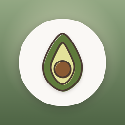

Nibble Book
A picture book of your baby's first foods.
How it works
1. Tap a food
There are 100 foods to discover, sorted into Veggies, Fruits, Proteins, Grains, and Allergens. Foods your baby hasn't tried yet are pencil sketches.
2. Log how it went
Choose the date and a reaction (Loved it, Liked, Disliked, or Allergy), add any notes, and tap Save. The food fills in with color.
3. Share the list
Tap Export List and type your baby's name. Your list becomes a single image, with any reactions at the top. Save it to Photos or share it with your pediatrician or sitter.
Questions
Why are some foods already filled in?
The first time you open the app, 12 example foods show how the journal looks. Tap Start Fresh to clear them. Examples never appear in a list you save or share. If you open an example and tap Save, it becomes part of your own list.
Why can't I save or share my list yet?
Your list needs at least one food of your own. Until then, the preview uses the examples and is marked SAMPLE.
How do I remove a food?
Tap the food, then tap Remove from List.
Save to Photos doesn't work
iOS asks for permission the first time. If you said no, turn it on in Settings › Privacy & Security › Photos › Nibble Book.
Is my list backed up?
It's stored in the app on your iPhone and is included in your iPhone backup. It doesn't sync between devices, and deleting the app deletes it. To keep a copy, save your list to Photos.
Does the app tell me which foods are safe?
No. Nibble Book is a place to write down what your baby has tried. It doesn't give medical advice and isn't a medical record. Ask your pediatrician when and how to introduce foods, especially allergens. If your baby has trouble breathing, swelling of the lips or face, or repeated vomiting, call 911.
Contact
Questions or ideas? Email tajimaru1209@gmail.com.
Privacy Policy
Nibble Book doesn't collect any data. The developer can't see your baby's name, foods, reactions, or notes. There is no account, no analytics, no advertising, and no tracking.
What's stored
The name you type and the foods, dates, reactions, and notes you log are stored in the app on your iPhone. Nothing is sent to a server.
Photos
If you choose Save to Photos, iOS asks for permission to add the image to your photo library. The app can't read your photos.
Sharing
Your list leaves your iPhone only if you send it. Whatever app you share with handles it under its own policy. The image includes the name you typed and any notes on foods marked Allergy.
Deleting your data
Tap a food and choose Remove from List, or delete the app to remove everything.
Children
The app is meant for parents and caregivers. It doesn't collect information from anyone, including children.
Changes
If this policy changes, the new version will be posted on this page. Last updated November 7, 2026.